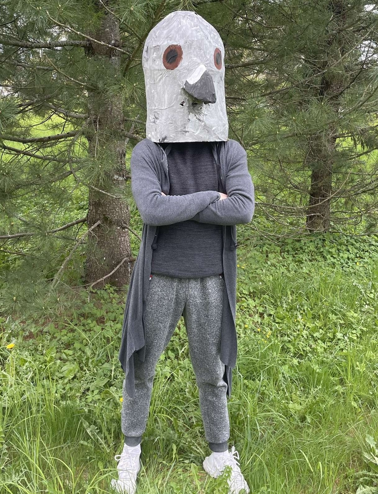
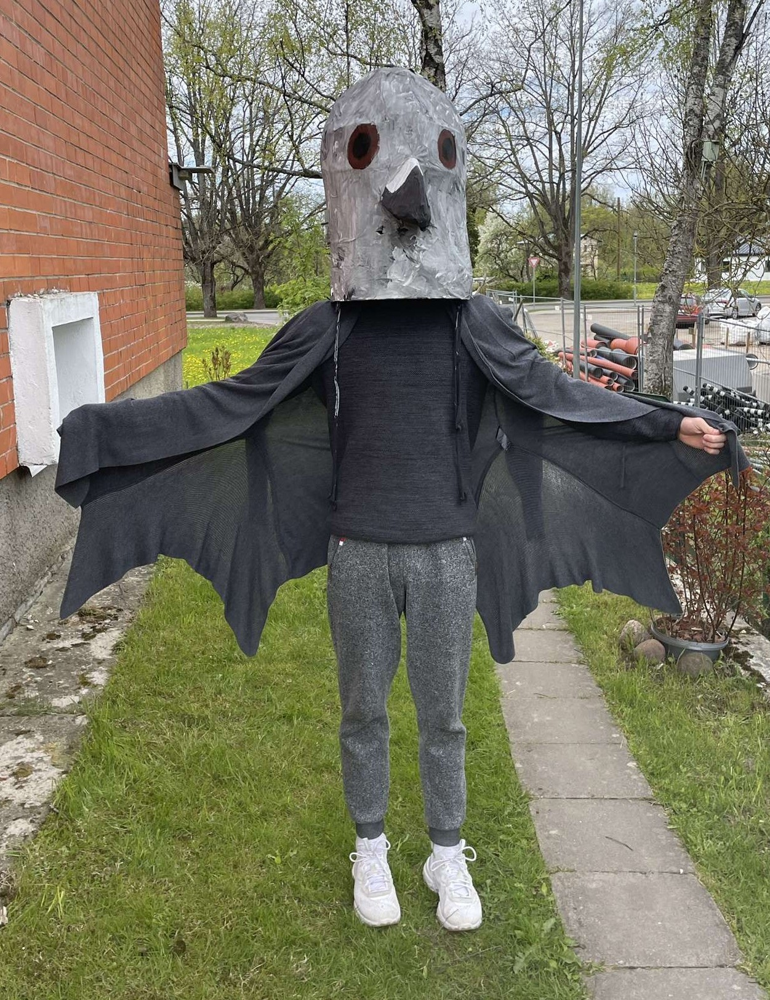

Putns, miera un harmonijas simbols, pastnieks, mīļvārdīņš, personvārds. Un tas viss iemieso vārdu "BALODIS". Arī es esmu Balodis. Niks Balodis.

Vēstījums manai maskai ir ilgtspēja – ne vien izvēlētajos materiālos, bet arī dzimtas turpinājumā. Balodis man ir ļoti nozīmīgs, jo tas ir mans uzvārds un atgādina par cilvēkiem ģimenes lokā. Vēlos, lai tālākie ģimenes koka zari veidotos tieši ar šo uzvārdu. Lai radītu masku, es izmantoju kartonu, žurnālus, līmlenti, krāsas un līmi.